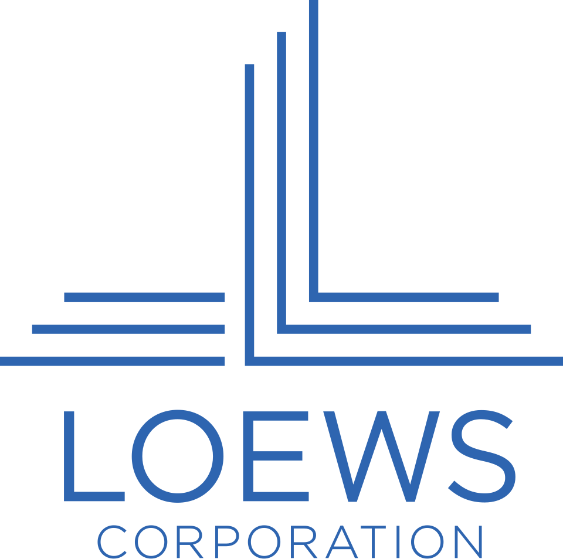

Loews Corporation
Loews Corporation은 뉴욕에 본사를 둔 미국의 복합기업이다. 여러 사업회사의 과반 지분을 보유하고 장기 관점의 가치투자자로 자본을 배분한다.
최종 업데이트

Loews Corporation는 어떤 브랜드인가
회사는 CNA Financial Corporation, Boardwalk Pipelines, Loews Hotels와 Altium Packaging의 과반 지분을 보유한다. 장기적 관점의 가치투자자를 표방하며 사업회사 보유와 자사주 매입에 자본을 배분한다.
2012년 12월 31일까지 3년 동안 자사주 매입에 $1.3 billion을 지출했다. 1971년부터 2020년까지 발행주식 수를 1.3 billion주에서 291 million주로 줄였다.
과거 영화관, 담배, 시계, 방송과 해양 시추 등으로 사업을 다각화했으며 현재는 금융, 파이프라인, 호텔과 포장 관련 회사를 주요 보유자산으로 둔다.
Loews Corporation는 어떻게 시작되고 성장했나
회사의 뿌리는 1946년 Laurence Tisch가 부모를 설득해 뉴저지주 레이크우드의 리조트 호텔을 $125,000에 인수한 데서 시작한다. Robert가 합류한 뒤 형제는 이익을 호텔 사업 확장에 투자했고, 1956년 플로리다주 발하버에 Americana를 $17 million의 현금으로 건설했다.
1959년 전국 102개 영화관을 운영하던 Loew's Theatres의 지배지분을 인수했으며 같은 해 뉴욕증권거래소에 상장했다. 이후 Lorillard Tobacco Company, CNA Financial과 Bulova Watch Company를 차례로 인수하며 사업을 다각화했다.
영화관 사업은 1985년 매각했다.
Loews Corporation의 브랜드 아이덴티티는 무엇인가
장기 가치투자 관점에서 다양한 사업회사의 과반 지분을 보유하고 자사주 매입을 병행하는 자본 배분 방식이 특징이다.
Loews Corporation의 대표 제품과 서비스는 무엇인가
주요 보유회사는 CNA Financial Corporation, Boardwalk Pipelines, Loews Hotels와 Altium Packaging이다. Boardwalk Pipeline은 고객에게 천연가스와 액체의 운송, 저장, 집하와 처리 서비스를 제공한다.
이 사업은 2003년 인수한 Texas Gas Transmission과 이듬해 인수한 Gulf South Pipeline Company를 통합해 구성했다. 호텔 사업은 회사의 출발점이 된 분야이며, 금융과 포장 관련 회사를 포함한 과반 지분 포트폴리오와 함께 운영된다.
회사는 직접적인 단일 제품군보다 여러 사업회사의 지분을 보유하고 자본을 배분하는 구조를 취한다.
Loews Corporation는 지금 어떤 상태인가
회사는 뉴욕에 본사를 두고 CNA Financial Corporation, Boardwalk Pipelines, Loews Hotels와 Altium Packaging의 과반 지분을 보유한다. 2018년 Boardwalk의 공개 유한책임조합 지분 전량을 단위당 $12.06에 인수해 비공개회사로 전환했다.
Diamond Offshore는 2020년 연결재무제표에서 제외됐으며, 2024년 Noble Corporation의 인수가 완료되면서 회사의 해양 시추 사업 관여도 끝났다.
Loews Corporation 로고는 어떻게 변해왔나
자주 묻는 질문
Loews Corporation는 어느 나라 브랜드인가요?
Loews Corporation는 미국의 금융 브랜드입니다.
Loews Corporation는 언제 설립되었나요?
Loews Corporation는 1946년 설립되었습니다.
Loews Corporation의 브랜드 아이덴티티는 무엇인가요?
장기 가치투자 관점에서 다양한 사업회사의 과반 지분을 보유하고 자사주 매입을 병행하는 자본 배분 방식이 특징이다.
Loews Corporation의 대표 제품은 무엇인가요?
주요 보유회사는 CNA Financial Corporation, Boardwalk Pipelines, Loews Hotels와 Altium Packaging이다.
Loews Corporation는 현재 어떤 상태인가요?
회사는 뉴욕에 본사를 두고 CNA Financial Corporation, Boardwalk Pipelines, Loews Hotels와 Altium Packaging의 과반 지분을 보유한다.
Loews Corporation의 본사는 어디에 있나요?
Loews Corporation의 본사는 뉴욕에 있습니다(위키데이터 기준).
Loews Corporation의 공식 웹사이트는 어디인가요?
Loews Corporation의 공식 웹사이트는 http://www.loews.com 입니다.
출처와 검증
Loews Corporation 관련 참고: 공식 웹사이트 · 위키데이터 Q826526 · 영어 위키백과. 브랜드명은 한글과 원어를 함께 표기하되 데이터에 없는 표기는 만들지 않습니다. 기원 국가·설립연도는 검수된 정의문에서 확인된 값을 우선하고, 없을 때만 공식 웹사이트 URL이 일치하는 위키데이터 개체의 값을 씁니다. 위키데이터 값은 2026-09-12 기준입니다.